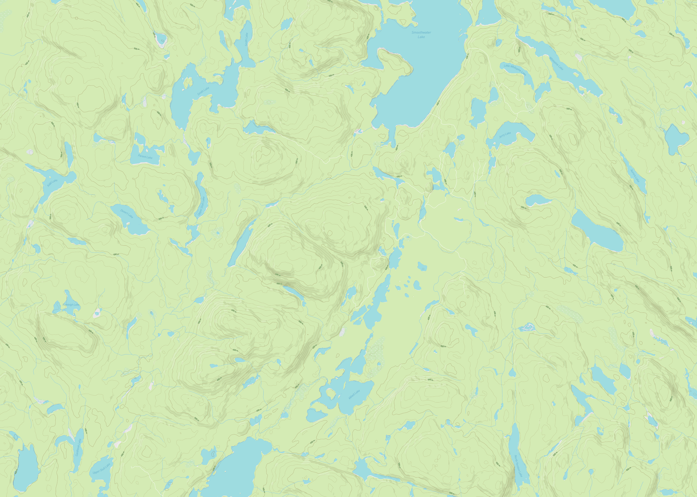

Hiking Maps
View on GitHub
Whenever I go hiking, I usually print out maps from online before leaving, but it’s often a pain to find high quality maps at the correct scale. I wrote a program which makes topographic maps cropped to show given GPS tracks. This required first creating a properly scaled map, and then adding an additional vector layer of info on top of the map. My map was inspired stylistically by the design of the USGS quads.

A portion of the USGS quad that includes Mt. Greylock, the highest point in Massachusetts.
I built the base maps by downloading Open Street Map tiles. OSM has a standard convention for naming tiles (“slippy map” names), which allows different styles of tile to be used by simply interchanging the url for the tile server. I ended up using a custom map style created in Mapbox, which let me emulate the classic topographic map look seen in the USGS quads.
An example map I created using my tiles, showing Ishaptina Ridge, the highest point of Ontario.
In order to scale the maps correctly, I calculated the region of the map given the extent of the GPS track for the hike and the desired aspect ratio, downloaded all the tiles that comprised that region, and then cropped them to the correct size. In order to draw the route and scale, I used a python package called reportlab, which includes nice features for generating and editing PDF documents.

The final map for one day of my canoe camping trip to the summit of Ishpatina Ridge.
I ended up using this program first to generate maps for my canoe camping trips to the French River and Ishpatina Ridge during my summer in Ontario in 2021!


Laminating the maps proved an essential addition when using them for canoeing.